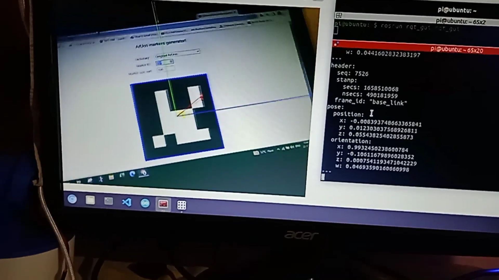

#1
Floor Cleaning Robot
While cleaning, getting to those nasty little unreachable spaces under the beds, tables, and
sofas can be a big pain. so, I created a small and cute wifi controlled vaccum cleaning bot.
To know more about this project
Click here
#2
Smart Glasses
Smart Glass- Inspired by Google glasses, I made a wearable prototype that can function quite
similar to Google Glass. In this project, we will make a wearable extension that can work like
Google glasses.
To know more about this project
Click here

Aruco-Marker-Pose-Estimation
It's completed ROS project on Detection and pose estimation of aruco marker and calculating the
x , y and theta of camera with respect to aruco marker.
To know more about this project
Click here
ROS Mar Rover
A Web-cam intregrated 6 wheeled ROS rover runs on raspberry pi 4 and controlling done over the local network. This project is Inspired by NASA Mars Rover.
To know more about this project
Click here